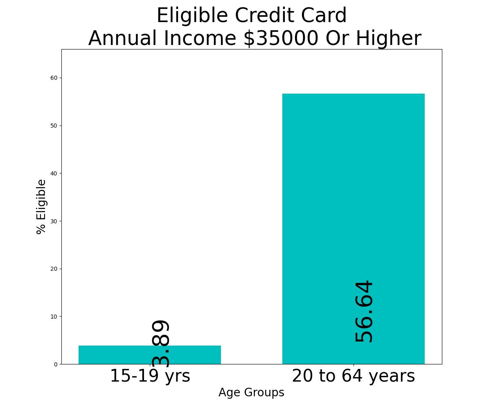

<html>
<head>
<title>Data Science: Study into Credit Card Elibiglity</title>
<link rel="stylesheet" href="Pt_style.css">
</head>
<body>
<div id="projecttitle">
<h1>Can the use of Australian census income data indicate whether or not
there needs to be stricter controls on credit card applications for young
Australians under 21?</h1>
<hr/>
</div>
<p>September 2021</p>
<h2>Problem Statement</h2>
<p>Can the use of Australian census income data indicate whether or not there needs to be stricter controls on 
credit card applications for young Australians under 21?</p>

<h2>Background</h2>
<p>This study investigated personal income and employment data from the 2016 Australian Census to 
identify any distinct characteristics with age groups and determine if there should be a prohibition on 
applying for credit cards under the age of 21 without a co-signer nor written proof of stable income like in 
the United States according to Schwartz [1]. 
The current legal age in Australia to apply for a credit card is 18. Cooke [2] claims that unsteady income is a 
significant factor in having a credit card application rejected. According to CreditCard.com.au [3] the 
minimum annual income required is typically $35,000 per year. However according to the same site and 
McMullen et al [4] Australians can get low income credit cards with a minimum annual income of $15,000, 
albeit with lesser privileges. 
A survey in November 2020 reported by Granwal [5] revealed that 18 to 25 years olds have the highest 
average value of personal debt over other age demographics, around $3800. </p>

<h2>Input Data</h2>
<p>A data pack was downloaded from https://datapacks.censusdata.abs.gov.au/datapacks/ [6]. The tables 
were part of the 2017 ABS release of the 2016 Census for the Australian population. The datasets are 
tabular data, in CSV format. They are static, only showing the results from the 2016 Census survey. Three 
tables will be used and according to the ABS [6] [7] [8] [9] are titled as follows:<br>
    - G17A and G17B: Total Personal Income (weekly) by Age by Sex<br>
    - G43B: Labour Force Status by Age by Sex<br></p>
<p>All the attributes are categorical. The ages are grouped into age groups, the incomes grouped into intervals 
and the labour force status is categorical. The income attribute is most important but employment status 
information (full time, part time and unemployment) will be utilised because they are useful indicators of 
income stability. All tables have one row and each attribute represents a particular gender, age group and 
income range and the count of persons within it. Only all persons data (P) will be considered from both 
tables. From G17B and G17C the following attributes will be used: P_Neg_Nil_income_x_y_yrs, 
P_Neg_Nil_income_Tot, P_a_b_x_y_yrs, P_a_b_Tot and P_Tot_Tot. So therefore the attributes showing 
income from $a to $b and negative or nil income for each age bracket x years to y years, and the total 
population of each age group.</p> 
<p>From G43B, the attributes showing the full time and part time employed persons count and the 
unemployed persons count for all age brackets (e.g. P_Emp_FullT_x_y, P_Emp_PartT_x_y and 
P_Tot_Unemp_x_y) as well as total populations for each category, age group will be utilised. The other 
attributes for 43B are as follows: Employed but away from work (Emp_awy_f_wrk), Hours Worked Not 
Stated (Hours_wkd_NS), Unemployed but looking for full time work (Unem_look_FTW), Unemployed but 
looking for part time work (Unem_look_PTW), Total Persons in Labour Force (Tot_LF), Total Persons Not In 
Labour Force (Not_in_LF) and Labour Force Status Not Stated (LF_NS). The Total Persons in Labour Force 
was later used post analysis to explain unusual employment rates.</p>

<table>
  <tr>
    <th>Age Categories</th>
    <th>Income Categories</th>
    <th>Employment Categories</th>
  </tr>
  <tr>
    <td>
	15 to 19 years<br>
        15 to 19 years<br>
	20 to 24 years<br>
	25 to 34 years<br>
	35 to 44 years<br>		
	45 to 54 years<br>		
	55 to 64 years<br>		
	65 to 74 years<br>		
	75 to 84 years<br>		
	Over 85 years<br>
	<br>
	<br>
	<br>
	<br>		
    </td>
    <td>Negative to nil income<br>
$1-149<br>
$150-299<br>
$300-399<br>
$400-499<br>
$500-649<br>
$650-749<br>
$800-999<br>
$1000-1249<br>
$1250-1499<br>
$1500-1749<br>
$1750-1999<br>
$2000-2999<br>
Over $3000</td>
    <td>Full time<br>
Part time<br>
Unemployed<br>
<br>
<br>
<br>
<br>
<br>
<br>
<br>
<br>
<br>
<br>
<br></td>
  </tr>
</table>
<p><b>Table 1: </b>Summary of the age, income and employment categories used in Census data for this study.</p>

<h2>Business Requirements</h2>
<p>The main aim of this study is to identify any notable characteristics in income with regards to income 
requirements for credit card applications with age demographics to identify the need for restrictions for 
under 21 year olds.</p>
<p>In this process it is possible that trends with other age groups with income and employment status can be 
identified and become the subject of debate for whether or not there should be restrictions on them. This 
may be the case for those post retirement.</p> 
<p>Bertram in 2020 [10] suggested that big data is very useful for financial and banking organisations in that it 
efficiently enhances the ways they can risk manage, provide better and faster responses in the system and 
better overall risk coverage. This study on personal income and employment by age category will be a useful
resource in improving risk management. Banks can identify how risky a potential customer is from their age 
if that age is likely to be associated with poor income and employment. It will improve the process of 
approving and rejecting. Risk management is essential when dealing with people with more vulnerable 
employment and income situations.</p> 
<p>Using Census data does have restrictions. It is not quite up to date and can be vague in representing every 
age group and personal income by all individuals in detail. The numbers for age and income is grouped into 
categories. Banks may want more detail on a particular individual’s income and work status in certain 
circumstances.</p>
<p>This study can be useful for the federal government in the situation they consider tighter laws for credit 
cards and other financial loans based on age demographics, such as in the United States with the CARD Act. 
This is a short study that has taken a few weeks to complete with some fairly intensive data wrangling. It 
forms the basis for future data science projects that can more accurately identify financial issues and 
improve operations.<p>

<h2>Application Areas</h2>
<p>The use of population data is important in the banking and lending sector. Bhargava [11] suggests that it is 
very useful for identifying a customer’s financial behaviour and the types of services they want and 
understand customers in order to effectively hit target markets. Bhargava also suggests the income level 
and stability is important in optimising an offer to a customer. This study identifies any importance in 
Census data in whether targeting age groups to sell and to avoid selling to is a good idea based on age 
specific income and employment information.</p>
<p>The intent of this study is to identify any distinctive age characteristics with credit card ineligibility based on 
personal income. The base of this study can also be used to determine the eligibility of other banking 
products to consumers based on age such as mortgages, personal and car loans and even types of 
insurance. If there are notable patterns with age groups and credit card ineligibility banks and other 
financial institutions can use this study as a means to reduce losses from unpaid debt and improve 
efficiency in credit card lending. The identification of links between employment type and income will 
provide other reliable criteria for credit card approvals. In challenging economic times due to Covid and 
government responses and high levels of debt it is important that banking services focus on reducing losses 
and one tactic is to improve their standards for lending money to prospect customers.</p>
<p>The data wrangling process provided a good basis for the development of programs that can meddle 
complex Census datasets into simple tables. Future data wrangling work will focus on the development of a 
program that can automate the process of wrangling these datasets into easy to read, understand and use 
tables. This is also of significant benefit to businesses that want to undertake their own data analysis 
activities using Census data.</p>

<h2>Challenges</h2>
<p>There are a few significant challenges in this study. Income is not the sole determinant for approving credit 
cards. Employment status and credit history other factors in approving credit cards for example. The income
values in ranges, no exact income details for people. In the eyes of some businesses the results may be a 
little vague.</p>
<p>For the data for personal income and employment status, the age values are shown in ranges. There are no 
exact age values. This is a potential problem when using 15 to 19 years plus 20 to 24 years to look at 
characteristics specific to under 21s. For personal income and employment details the Census data groups 
these age groups together. Table G04 in the 2016 Census is age by sex [12]. Obtaining data for the total 
count of persons for each age from 15 to 19 yields these results.</p>

<table>
<tr>
<th>Attribute</th>
<th>Count</th> 
<th>Percentage of 15 to 19 year group</th>
</tr>
<tr>
<td>Age_yr_15_P</td>
<td>278837</td>
<td>19.61</td>
</tr>
<tr>
<td>Age_yr_16_P</td>
<td>282097</td> 
<td>19.84</td>
</tr>
<tr>
<td>Age_yr_17_P</td>
<td>282478</td>
<td>19.87</td>
</tr>
<tr>
<td>Age_yr_18_P</td> 
<td>284249</td>
<td>20</td>
</tr>
<tr>
<td>Age_yr_19_P</td>
<td>293937</td>
<td>20.68</td>
</tr>
</table>

<p><b>Table 2:</b>The number and percentage of population of each age in the 15 to 19 age group.</p>

<p>Approximately 40.68 percent of this group is 18 years old and over and legally able to apply for a credit card.
100 percent of all other ages in this study are allowed by law to apply for a credit card.</p>
<p>The datasets are large with a lot of values. For each table there is only one row, representing the entire 
Australian set. There are many columns, each representing one attribute and one value per attribute. This 
can present challenges with the data wrangling process, including the unintentional creation of errors and 
subsequent error propagation as the process continues. The process for data wrangling to modify both 
datasets into the required attributes and categorical values was lengthy and complex, requiring many lines 
of code.</p>
<p>Finally the data is from the 2016 Census, the results of essentially a survey undertaken by every household 
in Australia during a night in 2016. The data on employment and income is accurate as that night in 2016. It 
was five years ago. Things may have changed significantly since then. MacroTrends [13] reports the 2016 
unemployment rate in Australia as 5.71 percent. This figure increased to 6.61 percent in 2020. The ABS [14] 
reported the national unemployment rate as 5.8 percent in February 2021, which can be seen as a minor 
change from the 2016 figure. The ABS [15] also reported changes in median income for Australians in 
2017/2018 from 2016/2017, a 3 percent increase. It is possible that there have been further changes over 
the last few financial years. These examples suggest that weekly income and employment status statistics 
could be different in the 2021 Census, which will be released in 2022 and for that reason couldn't be used 
unfortunately for this study.</p>

<h2>Data Analysis</h2>
<h3>Software</h3>
<p>Python was used for the data analysis. Python has features and modules are simple to learn and use and is 
already the most popular programming language for data science. To back that up a survey conducted by 
KDnuggets found 65.8 percent of 1800 participants use Python for data science according to Piatesky in 
2019 [16] . The modules numpy, pandas and matplotlib have been used for the data extraction and 
wrangling and visualisations. Python IDLE was employed as the main platform to develop and run the code, 
and Anaconda was utilised to visualise the pandas data frames and numpy arrays. Excel as utilised to test 
the accuracy of the mathematical operations constructed. It is important to test code before it is deployed 
to eliminate errors and prevent significant error propagation.</p>

<h3>Procedure Summary</h3>
The data process can be summarised as follows:<br><br>
<ol start="1">
<li>Download the data pack from the Census 2016 website.</li>
<li>Extract the tables 17b, 17c and 43b for the whole Australian population set.</li>
<li>Discard any unwanted columns from 17b and merge with 17c. Discard any unwanted columns in 43b.</li>
<li>Check the data frames for 17 and 43 for any missing and non-numerical values.</li>
<li>Wrangle the data frames using numpy into arrays where each column represents an age group and each 
row represents an attribute (of income for 17 and employment status for 43) and save into new csv file.</li>
<li>Use modified data frame in 17 to calculate eligibility for both low income and normal income credit cards 
in terms of both population count and percentage of population for each age category.</li>
<li>Calculate percentages of full time employed, unemployed and total employed in 43 for each age 
category.</li>
<li>Group age categories into under 25 ,25 and over, under 20, 20 and over, under 25, 25 to 64 years , under 
20 v 20 to 64 years and calculate attributes in income, credit card eligibility and employment status for 
these age categories.</li>
<li>Use matplotlib to bar graph credit card eligibility categories and employment categories for all age 
groups, then compare credit card eligibility and employment type for the new age categories (under 25 v 25
and over, under 20 v 20 and over, under 25 v 25 to 64 years, under 20 v 20 to 64 years).</li>
<li>Create scatter plots and correlation matrices for the following:
<ul type="circle">
<li>low income credit card eligibility v total employed</li>
<li>normal income credit card eligibility v full time employed</li>
<li>credit card ineligibility v total unemployed</li>
</ul>
</li>
</ol>

<p>Three separate python files were constructed. One to create the data frames in a comprehensive data 
wrangling process, one to create all the bar graphs and one to create the scatter plots and correlation 
matrices.</p>
<p>A full 2016 Census data pack was downloaded as a zip folder from the 2016 Census website and extracted. 
The tables G17B, G17C and G43B were taken and used for this study. . All the female specific attributes from
G43B were also eliminated. This project only deals with attributes for all persons, nothing gender specific. 
The resulting data frames were named Data frame 17b and Data frame 43b.</p>
<p>The row and column attributes representing the totals were checked for Data frame 17b using Python. It 
was noted that the values representing the total for each age group and each income interval did not match
the actual calculated values in Python. A screenshot is shown below.</p>

<div></div>

<p><b>Figure 1:</b> The Output From Python showing no missing data and also showing that the Census reported 
totals and calculated totals disagree for Data frame 17 very slightly. </p>

<p>This could be due to how Census forms were filled out. It is possible that a minority of people may have 
made errors in their forms including filling out more than one income bracket. The mathematical totals 
were calculated but the totals reported by the Census are likely to be more realistic and accurate population
totals, so were kept as the totals. This was also the case for Dataframe43b where some employment 
categories were definitely not mutually exclusive.</p>
<p>Income levels were categorised into two sets of categories based on credit card application research in 
Australia. According to creditcard.com.au [3] and McMullen et al [4] a typical threshold for a normal credit 
card is a minimum income of $35,000 annually and for special low rate credit cards $15,000 annually. Pay 
Calculator [17] estimates the weekly pay after tax for both annual incomes to be $600/week and $288/week
receptively. If the lowest vale in the income range falls below the threshold, that income bracket will be 
classified ‘ineligible’ for a credit card, otherwise the income bracket will be classified as ‘eligible’. This 
information will be added to the table. In this study this implies that in order to be eligible for a low income 
credit card, the income bracket an individual should be in is the $300 to $399/week or higher. Anything less 
was considered ineligible. In order to be eligible for a normal income limit credit card, the income bracket 
an individual should be in is the $650 to $749/week or higher. Anything less was considered ineligible, even 
though a person may have income between $600 and $649. As there are only income categories the exact 
incomes of people were unknown. </p>
The Data frame 17b was manipulated to calculate the count of persons considered both eligible and 
ineligible for both the low income ($15000/year) and normal income ($35000/year) credit cards by 
summing up the appropriate income bracket counts within each category. These rows were added to the 
data frame, and this data frame was exported to CSV for backup. These characteristics were then calculated 
as percentages of the age group population. When calculating these percentages the figures for personal 
the total count was still used even though the unknown income category could have been considered, so 
consequently not all eligible and ineligible pairs will add up to 100. the purpose was to calculate a more 
accurate percentage of those eligible as only the reported incomes were considered. The final table shows 
the total for all people regardless of whether or not they stated their income.</p>

<table>
<tr>
<th>Attribute </th>
<th>Formula</th>
</tr>
<tr>
<td>N(eligible low income CC)</td>
<td> = N(Total) – N($150-299/week) – N($1-149/week) – N(negative/no income)</td>
</tr>
<tr>
<td>N(eligible CC with $35K/year income)</td>
<td> = N(Total) - N($500-649/week) – N($400-499/week) + N($300-399/week) - N($150-299/week) – N($1-149/week) – N(negative/no income)</td>
</tr>
<tr>
<td>N(ineligible low income CC)</td>
<td>= N($150-299/week) + N($1-149/week) + N(negative/no income)</td>
</tr>
<tr>
<td>N(ineligible CC with $35K/year income)</td>
<td>= N(ineligible low income CC) + N($500-649/week) + N($400-499/week) + N($300-399/week)</td>
</tr>
<tr>
<td>PC (eligibility)</td>
<td> = (N(eligibility)/N(Total))x100</td>
</tr>
<tr>
<td>Employment Rate </td>
<td>= (N(Total Employed)/N(Total))x100</td>
</tr>
<tr>
<td>Unemployment Rate </td>
<td>= (N(Total Unemployed)/N(Total))x100</td>
</tr>
<tr>
<td>FT Employment Rate </td>
<td>= (N(Employed Full Time)/N(Total))x100</td>
</tr>
</table>

<p><b>Table 3:</b> Equations of Calculations Used To Wrangle Data From Census Tables</p>

<p>Matplotlib and pyplot was used to produce bar graphs. The pyplot sub module of matplotlib was utilised 
(import matplotlib.pyplot as plt) using the function plt.bar along with associated editing and styling 
functions to plot the bar graphs. The following graphs were produced</p>
<ul type="circle">
    <li>Number of persons by age group that earn more than $300/week and likely to be eligible for a low income 
credit card.</li>
    <li>Number of persons by age group that earn more than $650/week and likely to be eligible for a normal 
credit card</li>
    <li>For both levels the ineligibility by number of persons for each age group.</li>
    <li>Eligibility and ineligibility for both levels as percentages of the population counts for each age group, using 
numpy mathematical operations to calculate these percentages.</li>
    <li>Total employment rate for each age group.</li>
    <li>Total unemployment rate for each age group.</li>
    <li>Full time employment rate for each age group.</li>
</ul>

<p>Matplotlib and pyplot was also used to create bar graphs to compare percentage characteristics of credit 
card eligibility, ineligibility, total employment, unemployment and full time employment between the 
following age groups</p>
<ul type="circle">
    <li>Under 25 years old versus over 25 years old</li>
    <li>Under 20 years old versus over 20 years old</li>
    <li>Under 25 years old versus those aged from 25 to 64</li>
    <li>Under 20 years old versus those aged from 20 to 64</li>
</ul>

<table>
<tr>
<th>Age Category</th>
<th>Age Categories from Census Tables</th>
</tr>
<tr>
<td>Under 25 years</td>
<td>Ages 15 to 19 + Ages 20 to 24</td>
</tr>
<tr>
<td>25 years and over</td>
<td>Ages 25 to 34 + Ages 35 to 44 + Ages 45 to 54 + Ages 55 to 64 + Ages 65 to 74 + Ages 75 to 84 + Ages 85 and over</td>
</tr>
<tr>
<td>20 years and over</td> 
<td>Ages 20 to 24 + Ages 25 to 34 + Ages 35 to 44 + Ages 45 to 54 + Ages 55 to 64 + Ages 65 to 74 + Ages 75 to 84 + Ages 85 and over</td>
</tr>
<tr>
<td>25 to 64 years</td>
<td>Ages 25 to 34 + Ages 35 to 44 + Ages 45 to 54 + Ages 55 to 64</td>
</tr>
<tr>
<td>20 to 64 years</td> 
<td>Ages 20 to 24 + Ages 25 to 34 + Ages 35 to 44 + Ages 45 to 54 + Ages 55 to 64</td>
</tr>
</table>

<p><b>Table 4:</b> How the new age groups were created using Census age groups.</p>

<p>The 64 age limit was chosen because according to the Australian Department Of Social Services [18] the 
minimum age to be eligible for an aged pension prior to 1 July 2017 was 65 years. This study assumes that 
those under 65 are more likely to be not working and could have lower incomes than other adults over 25 
but their financial situation is more complex than under 25 year olds (e.g. presence of savings).</p>
<p>Scatter plots were constructed to visualise any relationship between full time employment percentages and 
eligibility for normal credit card percentages, total employment percentages and eligibility for low income 
credit card percentages and total unemployment percentages and ineligibility for low income credit card 
percentages. Linear regression was employed to analyse the relationship between credit card eligibility 
based on income and work status. The command plt.scatter(x,y) can be used to create scatter plots using x 
and y values. The command df.corr() can be used to create a correlation matrix. Ranjan [19] claims that he 
general function from pandas dataframe.corr() is used to find the pairwise correlation of all columns in the 
data frame. Any non numeric values are automatically excluded. The standard Pearson coefficient is the 
default method.</p>
<p>The final tables as csv files along with the python codes are attached as separate files.<p>

<table>
<tr><th>Attribute </th><th> Type</th></tr>
<tr><td>Eligible CC $15000/yr income minimum</td> <td>Integer (population count)</td></tr>
<tr><td>Ineligible CC $15000/yr income minimum</td> <td>Integer (population count)</td></tr>
<tr><td>Eligible CC $35000/yr income minimum</td> <td>Integer (population count)</td></tr>
<tr><td>Ineligible CC $35000/yr income minimum</td> <td>Integer (population count)</td></tr>
<tr><td>PC Eligible CC $15000/yr income minimum</td> <td>Float (percentage of total minus undeclared income count)</td></tr>
<tr><td>PC Ineligible CC $15000/yr income minimum</td> <td>Float (percentage of total minus undeclared income count)</td></tr>
<tr><td>PC Eligible CC $35000/yr income minimum</td> <td>Float (percentage of total minus undeclared income count)</td></tr>
<tr><td>PC Ineligible CC $35000/yr income minimum</td> <td>Float (percentage of total minus undeclared income count)</td></tr>
<tr><td>Employed Full Time  </td><td>Integer (population count)</td></tr>
<tr><td>Total Employed  </td><td>Integer (population count)</td></tr>
<tr><td>Total Unemployed  </td><td>Integer (population count)</td></tr>
<tr><td>PC Employed Full Time  </td><td>Float (percentage of total)</td></tr>
<tr><td>PC Employed  </td><td>Float (percentage of total)</td></tr>
<tr><td>PC Unemployed  </td><td>Float (percentage of total)</td></tr>
<tr><td>Total </td><td>Integer (total count)</td></tr>
</table>

<p><b>Table 5:</b> Attributes in the final table for credit card eligibility and employment status</p>

<h2>Analysis Results</h2>
<p>The bar graphs depicted in Figure 5 to 8 show the population counts for all Census age groups for the 
following categories: eligible for a low income credit card, ineligible for a low income credit card, eligible for 
a credit card with a minimum income of $35000/year and ineligible for such a credit card. For each age 
group covering the ages 25 to 64 more than two million in each category are eligible for a low income credit
card. In contrast less than 500000 of those ages 15 to 19 and those aged over 85 are eligible for a low 
income credit card. More than 1 million of those aged from 15 to 19 are ineligible for a low income credit 
card, almost twice the count of the age group with the second highest number. The percentage of eligibility 
for a low income credit card is notably low for the 15 to 19 age group, with just 16.09 percent eligible for a 
low income credit card, compared to every other age group where the same figure is over 60 percent. The 
20 to 24 age group is the only other group with a figure less than 79 percent (65.94%). Ineligibility for a low 
income credit card is 83.91 percent for the 15 to 19 age group, with the 20 to 24 age group having the next 
highest, less than half this figure (34.06%). All other age groups have ineligibility rates less than 21 percent.</p>

<p>The number of people aged under 25 years old of 65 years old that earn $35,000 a year and over and are 
eligible for a credit card with such a requirement is notably lower than the other age groups, with figures 
nearly a third or less of the age groups covering the 25 to 64 year olds. There is no notable pattern with age 
for ineligibility, with the highest count being in the 65 to 74 age group and the lowest count being the 85 
years and over group. Only 3.89 percent of 15 to 19 year olds can get a credit card with a $35,000 minimum 
income requirement, compared to 19.79 percent and 19.97 percent for the 75 to 85 age group and the 85 
and over age groups respectively (close to six times the figure for the 15 to 19 group), 30.22 percent for 55 
to 64 year olds and 37.28 for 20 to 24 year olds. All over age groups have eligibility rates over 50 percent. </p>

</img>
<p><b>Figure 1:</b> Number of persons in each age group eligible for a low income credit card. </p>
</img>
<p><b>Figure 2:</b> Number of persons in each age group ineligible for a low income credit card.</p>
</img>
<p><b>Figure 3:</b> Number of persons in each age group eligible for a credit card that requires earning at least $35000/year.</p>
</img>
<p><b>Figure 4:</b> Number of persons in each age group ineligible for a credit card that requires a minimum annual income of $35000/year.</p>
</img>
<p><b>Figure 5:</b> Percentage of people in each age group eligible for a low income credit card.</p>
</img>
<p><b>Figure 6:</b> Percentage of people in each age group not eligible for a low income credit card.</p>
</img>
<p><b>Figure 7:</b> Percentage of people in each age group eligible for a credit card requiring minimum income of $35000/year.</p>
</img>
<p><b>Figure 8:</b> Percentage of people in each age group not eligible for a credit card due to not having an income 
at $35000/year or more.</p> 

<p>Figures 13, 14 and 15 display results for full time employment, total employment and unemployment as 
percentages of population for each age group. Less than 10 percent of 15 to 19 year olds work full time, 
less than 33 percent of 20 to 24 year olds work full time and for age groups 55 and over the figures are less 
than 36 percent with figures less than 10 percent for ages 65 and up. All other age groups are above 50 
percent full time employment. The rates of employment are under 38 percent for 15 to 19 year olds but 
under 20 percent for those in age groups 65 and over. All other age groups are above 58 percent with the 
three age groups covering 25 to 54 year olds all over 70 percent employment. The unemployment rate is 
notable higher amongst the 15 to 19 and 20 to 24 age groups with figures of 9.44 percent and 8.6 percent 
respectively. The unemployment rates are notably very low for all age groups above 65 years old, all under 1
percent.</p>

</img>
<p><b>Figure 9:</b> Percentage of each group in full time employment.</p>
</img>
<p><b>Figure 10:</b> Employment rate of each age group.</p>
</img>
<p><b>Figure 11:</b> Unemployment rate by age group.</p>

<h3>Under 25 Year Olds v 25 Year Olds and Over</h3>
<p>The percentage of under 25 year olds eligible for a low income credit card (38.6 percent) is about half that 
of 25 years and over (76.2 percent). Those under the age of 25 (52.6 percent) are about three and a half 
times as likely to be ineligible for a low income credit card than those 25 and over (14.8 percent). Those 
over the age of 25 are more than 2.5 times as likely to be eligible for a credit card (51.1 percent eligibility) 
whilst earning $35,000/year and more than those under the age of 25 (19.6 percent eligibility). 71.6 percent
of under 25s are ineligible for a credit card with those minimum income conditions compared to 39.9 
percent of those 25 years and over.</p>

<table>
<tr>
<td></img></td>
<td></img></td>
</tr>
<tr>
<td></img></td>
<td></img></td>
</tr>
</table>

<p><b>Figure 12:</b> Eligibility and ineligibility for under 25s v 25s and over.</p>

<table>
<tr>
<td></img></td>
<td></img></td>
</tr>
<tr>
<td></img></td>
</tr>
</table>

<p><b>Figure 13:</b> Employment status percentages under 25s v 25s and over.

<p>The full time employment rate for those 25 years and over (37.46 percent) is nearly double that of those 
under 25 year olds (20.47 percent). There is only a 6 percent different in employment rate between the two 
age categories but the unemployment rate for under 25 year olds is nearly triple that of those 25 years and 
over.</p>

<h3>Under 25 Year Olds v 25 to 64 Year Olds</h3>

<p>Removing the age groups from 65 years and over results in the figure for over 25 year olds for low income 
credit card eligibility increasing very slightly (1.2 percent increase) but a more notable increase in eligibility 
for a credit card requiring a minimum annual income of $35000 (8.4 percent increase). The ineligibility for 
such a credit card decreases by 7.4 percent. The figure for full time employment is 47.1 percent for 25 to 64 
year olds with the employment rate going to above 70 percent when ignoring those over ‘retirement age’. 
There is a slightly higher figure for unemployment (4.1 percent).</p>

<table>
<tr>
<td></img></td>
<td></img></td>
</tr>
<tr>
<td></img></td>
<td></img></td>
</tr>
</table>

<p><b>Figure 14:</b> Credit card eligibility and eligibility 15 to 24 years v 25 to 64 years</p>

<table>
<tr>
<td></img></td>
<td></img></td>
</tr>
<tr>
<td></img></td>
</tr>
</table>

<p><b>Figure 15:</b> Employment status 15 to 24 years v 25 to 64 years.</p>

<h3>Under 20 Year Olds v 20 Years And Over</h3>

<p>Now comparing just those in the 15 to 19 year old age group to the rest (20 years and over) yields 
substantial differences in the eligibility for a low income credit card, where those over the age of 20 are 
more than 4.5 times as likely to be eligible for one as the eligibility rate for under 20 year olds is under 20 
percent. More than double the percentage of 15 to 19 year olds would be considered ineligible for a credit 
card with a $35,000/year income requirement. In fact it is 96.1 percent ineligibility compared to just 41.5 
percent for those aged 20 and over. More than four times the percentage of over 20s work full time (37 
percent) than under 20s and their employment rate is 20 percent higher than 15 to 19 year olds (57.6 
percent). Only 3.7 percent of over 20s are unemployed.</p>

<table>
<tr>
<td></img></td>
<td></img></td>
</tr>
<tr>
<td></img></td>
<td></img></td>
</tr>
</table>

<p><b>Figure 16:</b> Eligibility and ineligibility 15 to 19 years v 20 years and over.</p>

<table>
<tr>
<td></img></td>
<td></img></td>
</tr>
<tr>
<td></img></td>
</tr>
</table>

<p><b>Figure 17:</b> Employment status 15 to 19 years v 20 years and over</p>

<h3>Under 20 Year Olds v 20 to 64 Year Olds</h3>

<p>Eliminating the people aged 65 years and over from the 20 years and over group results in a slight increase 
in the percentage of low income credit card eligibility (75.5 percent) and a notable increase in the 
percentage of people earning $35,000/year or more (up to 56.6 percent eligibility for such a credit card 
requirement with 35.3 percent ineligibility). The full time employment rate increases to 45.4 percent and 
the overall employment rate increases to 69.6 percent.</p>

<table>
<tr>
<td></img></td>
<td></img></td>
</tr>
<tr>
<td></img></td>
<td></img></td>
</tr>
</table>

<p><b>Figure 18:</b> Eligibility and ineligibility 15 to 19 years v 20 to 64 years.</p>

<table>
<tr>
<td></img></td>
<td></img></td>
</tr>
<tr>
<td></img></td>
</tr>
</table>

<p><b>Figure 19:</b> Employment status 15 to 19 years v 20 to 64 years</p>

<h3>Results Summary</h3>

<p>From the percentages it can be claimed that those under the age of 20 are around five times more likely to 
be ineligible for a low income credit card than those aged 20 and over, including and not including those 65 
years and over. They are over 95 percent ineligibility for a credit card requiring a minimum income of 
$35,000 , more than twice as likely to be ineligible than those 20 years and over. They eligibility for such a 
credit card is extremely low. The 15 to 24 age group is 3.7 times more likely to be ineligible for a low income
credit card than those aged 25 and over and twice as likely to be ineligible for a credit card requiring an 
income of at least $35,000 a year. The eligibility for a low rate credit card is significantly higher than just the 
15 to 19 year olds alone but the eligibility for a credit card and having an income of at least $35,000 a year 
is less than 20 percent.</p>
<p>As stated earlier percentages do not add up to 100 due to those in the Census refusing to state their 
income.</p>

<h3>Scatter plots and linear correlation.</h3>

<p>According to Profillidis and Botzoris in 2018 [20] values of the linear correlation coefficient indicate strong 
positive correlation when the value is between 0.8 and 1.0 and moderate positive correlation when the 
values are from 0.3 to 0.6. The scatter plots and linear correlation coefficient shows a fairly strong positive 
correlation of 0.939 between the percentage of people in each age group employed full time and earning a 
minimal income of $35000 a year for credit card eligibility. That means that age groups with higher full time 
employment rates are more likely to be earning the $35000 a year minimum income to obtain a normal 
credit card. There is very weak if at all correlation between the employment rate and the percentage of 
those eligible for a low income credit card (0.0527) and a fairly strong positive correlation between the 
unemployment rate and the percentage of those in each age group that are ineligible for any credit card 
(0.726). We can conclude that employment status is a factor in determining the amount of weekly income 
people earn and therefore the likelihood of eligibility to obtain a credit card.</p>

<table>
<tr>
<td></img></td>
<td></img></td>
</tr>
<tr>
<td></img></td>
</tr>
</table>

<p><b>Figure 20:</b> Scatter Plots Showing Correlation Between Employment And Eligibility Based On Income<p>

<td></img></td>
<p><b>Figure 21:</b> Screenshot Of Calculated Results Of Correlation Between Employment And Eligibility Based On Income<p>

<h3>Labour Force Data</h3>

<p>As discussed earlier challenge with utilising this study is the use of the 15 to 19 year old age category. If we 
were to assume that all the 16.1 percent of eligible low income credit card holders were in this 40 percent 
the figure still looks significantly lower than all the other age groups, but still less than 50 percent.</p>
<p>A quick Python pandas code was created to check the percentage of each Census age group in the labour 
force. The labour force category was ignored in the main data analysis process, but it may explain the low 
values of eligibility and employment amongst the older age groups. As shown below less than 20 percent of 
those ages from 65 to 74 were in the labour force in 2016 and less than five percent of those in the age 
groups 75 and above were in the labour force. As the eligibility age for the aged pension was 65 in 2016 and
the retirement age was such the low values are consistent with these facts and can provide good reasoning 
for the lower personal incomes and credit card eligibility based on personal income amongst those aged 65 
and over. The percentage of 15 to 19 year olds is significantly higher than these older age groups (47 
percent).</p>

<td></img></td>
<p><b>Figure 22:</b> Percentage of Each Age Group In The Labour Force (Output From Jupyter Notebook)</p>

<h2>Conclusions & Recommendations</h2>

<p>The study has found that credit card eligibility is significantly lower amongst under 25 year olds than 25 year
olds and over and the gulf between under 20 year olds and over 20 year olds is larger. When considering 
over 25s and over 20s taking away those over the age of 64 increased these differences. Eligibility for any 
credit card is notably very low amongst 15 to 19 year olds and eligibility for a credit card whilst boasting a 
personal income of $35000/year and over is significantly lower for ages under 25 and ages 65 and above.</p> 
<p>There is a strong correlation between the percentages of eligibility for a credit card due to having a minimal 
income of $35000/over and the percentage in full time employment, showing that employment type 
definitely has influence in personal income and therefore meeting credit card application criteria. 
The Python library including the pandas, numpy and matplotlib modules have been very useful tools in the 
wrangling of the datasets from Census tables 17 and 43 into easy to read tables and data visualisations with 
bar graphs, scatter plots and linear correlation. The work done with Python will form the basis for future 
data programming work using Census data.</p>
<p>Based on the credit card eligibility percentages for each age group used in this data analysis the following 
recommendations can be made
<ul type="circle">
<li>The credit card application age limit should stay at 18 years and should not be decreased, as 
indicated by characteristics amongst 15 to 19 year olds for credit card eligibility.</li>
<li>All age groups 18 and over should be allowed to apply for a low income credit card provided they 
meet the income requirements</li>
<li>Due to substantially low percentages of people earning under $35,000 a year under the age of 25, 
the idea of implementing laws for under 21 year olds to require parent or guardian consent and 
proof of income beyond reasonable doubt according to the CARD Act in the United States has 
significant merit. Less than 15 percent of under 25 year olds declared an annual income of at least 
$35000. Only about 20 percent of this age group declared they were working in a full time job. They
are significantly lower figures than those 25 years old and over.</li>
<li>Those on the aged pension and in retirement must provide proof of income and financial assets to 
get a credit card normally allowed for those with an income of at least $35,000/year</li>
</ul>

<h2>References</h2>

<p>[1] A. Schwartz (2011). “Old Enough to Fight, Old Enough to Swipe: A Critique of the Infancy Rule in the 
Federal Credit CARD Act”. 2011 Utah L. Rev. 407. Available “http://scholar.law.colorado.edu/articles/449/” 
[Accessed 8-Sep.-2021]</p>
<p>[2] G. Cooke. (2021). “Australian credit card and debit card statistics”. Finder. 9 Sept 2021. Available: 
https://www.finder.com.au/credit-cards/low-income-credit-cards. [Accessed: 09-Sep.-2021].</p>
<p>[3] (2021). “Low Income Credit Cards - Compare 10 Offers - CreditCard.com.au”. creditcard.com.au. 23 July 
2021. Available: https://www.creditcard.com.au/low-income-credit-cards/. [Accessed: 09-Sep.-2021].</p>
<p>[4] S. McMullen & A. Bradney-George. (2021). “Low Income Credit Cards - Get a Response in 60 Seconds”. 
Finder. 6 Sept 2021. Available: https://www.finder.com.au/credit-cards/low-income-credit-cards. [Accessed: 
09-Sep.-2021].</p>
<p>[5] L. Granwal. (2021) “Australia: average personal debt value by generation 2020 | Statista”. 16 Apr 2021 
Available: https://www.statista.com/statistics/1227995/australia-average-personal-debt-value-bygeneration/. [Accessed: 09-Sep.-2021]</p>
<p>[6] Australian Bureau of Statistics. (2017).“Metadata 2016 General Community Profile DataPack”. 2016 </p>
Census of Population and Housing. Australian Bureau of Statistics. Available: 
“https://datapacks.censusdata.abs.gov.au/datapacks/” [Accessed 7-Sep. 2021]</p>
<p>[7] Australian Bureau of Statistics. (2017). “2016 Census G17B: Total Personal Income (weekly) by Age by 
Sex”. 2016 Census of Population and Housing. Australian Bureau of Statistics. Available: 
“https://datapacks.censusdata.abs.gov.au/datapacks/” [Accessed 7-Sep. 2021]</p>
<p>[8] Australian Bureau of Statistics (2017). “2016 Census G17C: Total Personal Income (weekly) by Age by 
Sex”. 2016 Census of Population and Housing. Australian Bureau of Statistics. Available: 
“https://datapacks.censusdata.abs.gov.au/datapacks/” [Accessed 7-Sep. 2021]</p>
<p>[9] Australian Bureau of Statistics. (2017). “2016 Census G43B: Labour Force Status by Age by Sex”. 2016 
Census of Population and Housing. Australian Bureau of Statistics. Available: 
“https://datapacks.censusdata.abs.gov.au/datapacks/” [Accessed 7-Sep. 2021]</p>
<p>[10] M. Bertram. (2020). “How Big Data Impacts The Finance And Banking Industries”. [Online]. 
SmartDataCollective. Available: “ https://www.smartdatacollective.com/how-big-data-impacts-finance-andbanking-industries/” [Accessed 24-Sep. 2021]</p>
<p>[11] R. Bhargava. (2021). “Role of Data Analytics In The Lending Sector”. [Online]. Entrepreneur. 7 Sept 
2020. Available: https://www.entrepreneur.com/amphtml/355818. [Accessed: 09-Sep.-2021].</p>
<p>[12] Australian Bureau of Statistics. (2017). “2016 Census G04: Age by Sex”. 2016 Census of Population and 
Housing. Australian Bureau of Statistics. Available: “https://datapacks.censusdata.abs.gov.au/datapacks/” 
[Accessed 7-Sep. 2021]</p>
<p>[13] MacroTrends. (2020). “Australia Unemployment Rate 1991-2021”. [Online]. MacroTrends. Available: 
“https://www.macrotrends.net/countries/AUS/australia/unemployment-rate#:~:text=Australia%20Unemployment%20Rate%20-%20Historical%20Data%20%20,%20%20-0.12%25%20%2026%20more
%20rows%20” [Accessed 23 Sep. 2021]</p>
<p>[14] Australian Bureau Of Statistics. (2020). “Personal Income in Australia”. [Online]. Australian Bureau Of 
Statistics. 16 December 2020. Available: “https://www.abs.gov.au/statistics/labour/earnings-and-workhours/personal-income-australia/latest-release” [Accessed 24 Sep. 2021]</p>
<p>[15] Australian Bureau Of Statistics. (2020). “Labour Force, Australia: Headline estimates of employment, 
unemployment, underemployment, participation and hours worked from the monthly Labour Force 
Survey”. [Online]. Australian Bureau Of Statistics. 16 September 2021. Available: 
“https://www.abs.gov.au/statistics/labour/employment-and-unemployment/labour-force-australia/latestrelease” [Accessed 24 Sep. 2021]</p>
<p>[16] G. Piatesky. (2020) “Python leads the 11 top Data Science, Machine Learning platforms ...”. KDnuggets
Available: https://www.kdnuggets.com/2019/05/poll-top-data-science-machine-learning-platforms.html. 
[Accessed: 09-Sep.-2021]</p>
<p>[17]“Pay Calculator”. [Online]. Available: https://paycalculator.com.au/. [Accessed: 09-Sep.-2021].</p>
<p>[18] Department Of Social Services (2019). “Age Pension”. [Online]. Department Of Social Services. 19 July 
2019. Available: “https://www.dss.gov.au/seniors/benefits-payments/age-pension” [Accessed 24-Sep. 2021]</p>
<p>[19] S. Ranjan. (2020). “Python | Pandas dataframe.corr()”. [Online]. GeeksforGeeks. 22 April 2020. 
Available: “https://www.geeksforgeeks.org/python-pandas-dataframe-corr/” [Accessed 26 Sep 2021]</p>
<p>[20] V. Profillidis and G.Botzoris. “Modeling of Transport Demand: Analyzing, Calculating, and Forecasting 
Transport Demand”. Elsevier. 2018</p>

<h3>Codes</h3>
<p><a href="data_wrangling.py">1. Data Wrangling Process</a></p>
<p><a href="histograms.py">2. Data Visualisations (Bar Plots)</a></p>
<p><a href="scatter_plots.py">3. Data Visualisations (Scatter Plots)</a></p>


<p>Aaron Brunt September 2021</p>

</body>
</html>